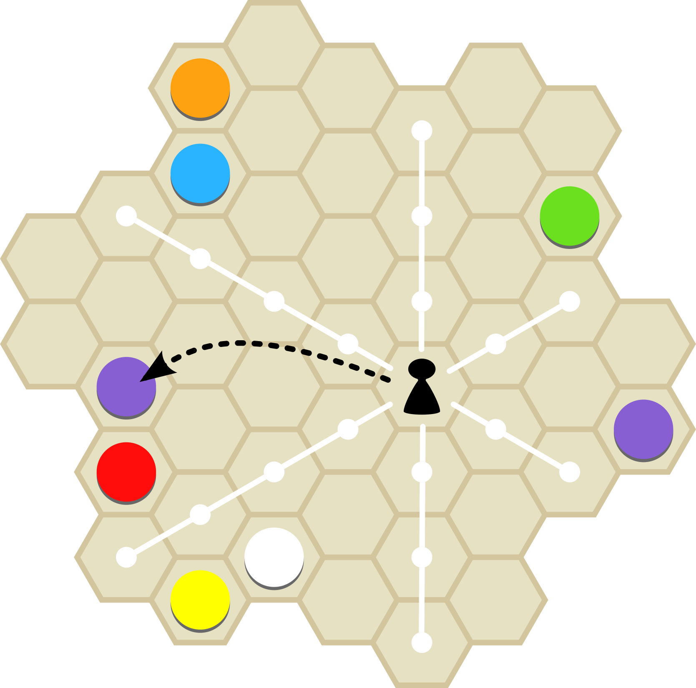

Rules of Tintas
A color collection game for 2 players |
Material
- Game board with 49 hexagonal spaces
- 49 pieces in seven colors (7 × 7)
- 1 pawn
Objective
Get all seven pieces of one color or win by majority.
Preparation
Spread all pieces at random onto the game board.
It doesn’t matter if two or more pieces of the same color wind up laying next to one another. Only if seven pieces of the same color are adjacent to another should you change the distribution.
The starting player is determined by lot. He gets the pawn. Players then alternate turns.
Play
The starting player places the pawn on a hexagonal space of his choice, takes the playing piece lying there and places it in front of him. This ends his game turn. Now it is the other player’s turn.
From now on, the active player has to move the pawn in any of the six possible directions – straight and, if applicable, accross unoccupied spaces – until it gets to an occupied space. He collects the playing piece lying on that space and places the pawn there.
If he can collect another piece of the same color by continuing to move the pawn, the active player may keep going until he is no longer able or willing to collect another same-colored piece.

If a player has no possibility of moving because the pawn is not in line with any occupied space, he has to jump the pawn to any space and collect the piece lying there. As before, he leaves the pawn on this space, and his turn ends.

End of the game
If one player has collected all seven pieces of one color, he wins immediately.
Otherwise, the player who has collected four or more pieces in at least four colors by the end of the game wins.
Watch out: As long as one player can still get seven pieces of one color to win, the game goes on!
Credits
Tintas was designed by Dieter Stein
for more information, visit Spielstein.com